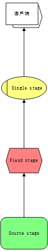
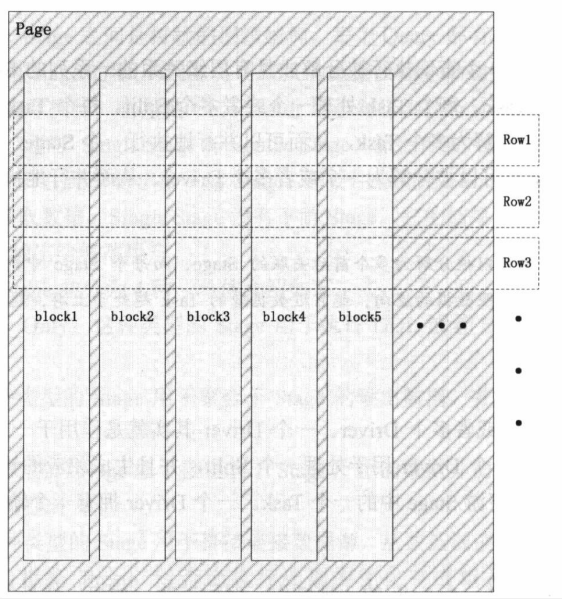

1.3. presto基本概念¶
1.3.1. presto服务进程¶
presto服务器进程一共有两种服务器进程：coordinator服务进程和worker服务进程，其中coordinator服务进程主要作用是:接收查询请求、生成查询执行计划、
任务调度和worker管理。而worker服务进程则执行被分解后的查询执行计划:task。

1.3.1.1. coordinator¶
presto服务器进程部署于集群中的单独节点上，是整个presto集群的管理节点。coordinator服务进程主要作用是接收查询请求，查询语句解析，生成查询执行 计划、stage和task并且对生成的task进行调度。除此之外，还对整个集群的worker节点进行管理。coordinator服务进程是整个集群的master进程，该进程于 worker进程通信从而获取到最新的worker进程信息，又与客户端进程进行通信，获取查询请求。而这些所有功能都是由coordinator进程的RESTFUL服务来实现。
1.3.1.2. worker¶
在一个presto集群中存在一个coordinator服务进程和多个worker服务进程，coordinator服务进程是管理节点，而worker进程是工作节点。在每一个worker进程 都有一个worker服务进程，该服务主要进行数据处理和task任务的执行。worker进程每隔固定的时间都会向coordinator服务进程发送心跳，告诉coordinator我 还活着，接受调度。当客户端接受到查询请求的时候，coordinator会从当前存活的节点随机选择worker进程进行task。而worker在执行task的时候又会对数据进 行分片处理，并行进行数据处理。
1.3.2. presto模型¶
presto可以通过不同的connector访问多种数据源，如hive、kafka、elasticsearch等(详情参照)，该节说明presto是如何访问多种不同类型的数据源，并且对
presto模型和概念进行描述。presto可以通过connector连接一个数据源，可以根据一个connector配置多个catalog，一个catalog可以有多个schema，一个
schema可以有多个table。

1.3.2.1. connector¶
presto是通过多种多样的connector来访问不同的数据源的。可以将connector当做presto访问数据源的驱动程序，每一个数据源必须有配套的connector。每种 connector都实现了presto标准的spi接口，因此只要你实现了spi接口，就可以编写一个自定义的connector。
当需要使用某种类型的connector的时候，需要在presto的安装目录下的etc/catalog里面创建配置文件，而且在该配置文件中必须要配置connector.name属性 presto的connector manager需要根据connector.name来查找数据源进行访问。
1.3.2.2. catalog¶
presto的catalog类似于mysql的数据库实例，而shcema类似于数据库。catalog的名称就是在etc/catalog里面添加的配置文件名称，如果配置了一个 postgres.properties,那么catalog就是postgres。
1.3.2.3. schema¶
presto的schema类似于数据库名称，一个catalog和schema确定一个表的明确位置信息。当使用presto去查询hive和mysql的时候，你会发现schema是数据库名称。 而当使用postgresql的时候schema是pg的schema。
1.3.2.4. table¶
presto的table和传统数据库的表定义是一样的。
1.3.3. presto查询执行¶
presto在执行sql语句的时候，将这些sql解析成对应的查询，并且在分布式集群中执行这些查询。

1.3.3.1. statement¶
statement语句就是指我们输入的sql查询语句。presto支持符合ANSI标准的SQL语句。这种语句由字句(Clause)、表达式(Expression)和断言(Predicate)组成。
presto将语句和查询分开主要是由于查询和语句概念不同，语句是输入的sql语句，而查询是根据语句生成的查询执行计划，进而生成可以执行的查询语，代表 着分布到所有worker节点的实际查询操作。
1.3.3.2. query¶
presto接收查询语句，生成查询执行计划query。一个查询执行代表这可以在集群中运行的查询，他由运行在worker上的节点和相互关联的阶段stage组成。 一个查询执行由stage、task、driver、operator、和datasource组成，这些组件之间通过内部联系共同组成了一个查询执行，从而得到sql查询结果。
1.3.3.3. stage¶
stage即是查询执行阶段，当执行一个sql的时候，presto会把查询分成多个不同阶段的stage，一个stage代表查询执行计划的一部分。通常情况下，stage 之间是树状结构。
每一个查询都有一个root stage，root stage用于聚集其他stage的数据并产生最终结果。stage并不会在集群中实际运行，stage是逻辑 执行计划和建模。
每一个stage(single stage和source stage)都会有输入和输出，都会从上游stage读取数据，然后将结果传递到下游stage。source stage没有上游stage，single没有下游stage。
presto包含四种类型的stage:
- Coordinay_Only
这种stage用于执行ddl、dml表结构创建和修改。
- Single
这种stage聚合子stage结果，并将最终数据返回到客户端程序。
- fixed
这种stage用于接收子stage产生的数据，并且在集群中对这些数据进行聚合和分组操作。
- source
这种stage直接接收数据源数据，从数据源读取数据，该阶段也会对sql进行优化，如数据过滤和断言下发。
1.3.3.4. exchange¶
presto是通过exchange来连接stage和stage的。exchage用来完成有上下游关系的stage之间的数据交换。
在presto中有两种类型的exchange，output buffer 和exchange client。生产数据的stage通过output buffer的exchange将数据传递给下游stage。消费数据 的stage通过名为exchange client的exchange获取上游stage的数据。
1.3.3.5. task¶
stage并不会在presto集群中实际执行，每一个stage都是由多个task组成，task是实际运行在presto的worker节点上。
在presto中一个查询被分解中多个stage阶段，每一个stage阶段又按照业务逻辑分成多个任务，每个任务处理一个或者多个分片，每个分片是由一个driver 程序来实际运行，通过这种分解来并行执行任务。
1.3.3.6. driver¶
一个task包含多个driver，每一个driver是对一个split分片的operator操作集合。因此一个driver处理一个split，并且由将结果传递到下一个stage的 task任务中，一个driver拥有一个输入和一个输出。
1.3.3.7. operator¶
一个operator是对一个split分片的实际操作，过过滤、加权、转换等。一个operator依次读取split的数据，并产生输出。operator每次读取一个page， 也输出一个page。
1.3.3.8. split¶
一个split是数据集的子集。当presto执行查询的时候，首先会从coordinator获取一个表所对应的split，然后presto会指定查询计划，选择合适的worker 去执行split。这里通常会用到数据本地化，就是尽量将worker分配在数据存储的地方。
1.3.3.9. page¶
page是presto数据处理单元最小的单元。一个page对象包含多个block对象，而一个block对象是一个字段的多行数据。多个block横切的一行就是presto 真实的一行数据。一个page最大为1M，最多16*1024行。
